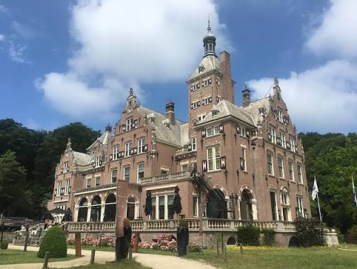
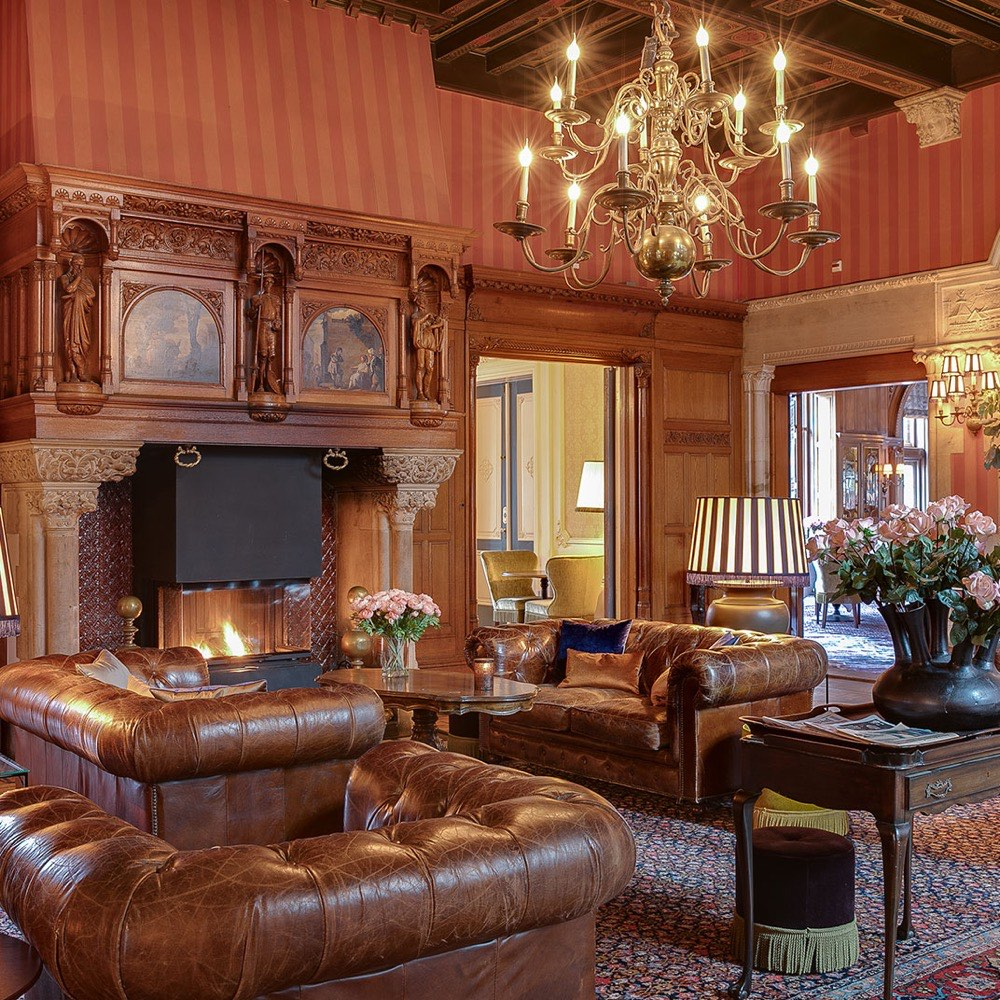

One day of inspiration and networking with design leaders at your level. At small tables you talk through the challenges you get stuck on alone, with peers who are in the middle of them or have already been through them. Confidential, with concrete solutions as the result.

Landgoed Duin en Kruidberg
Santpoort-Noord
You are responsible for design at a senior level. But the challenges on your plate are rarely simple, and your colleagues or your team usually cannot really help you with them. They are too close to it, or they lack the experience.
The places you would normally turn to disappoint. Conferences often do not touch your actual work, and in the hallways you find yourself talking to someone looking for a job or trying to sell you something. Design communities stay stuck in scattered opinions.
For design leaders and design managers (UX, CX, product design) with serious projects and responsibility at large multinationals, strong brands and international agencies.
The best insights come from peers at your level: people who have already solved the same challenge, or who are right in the middle of it just like you.
That conversation does not happen by itself. It takes the right people at the table, around exactly your theme, in a setting where you can speak freely. We put the group together with care, match on challenge and seniority, and choose formats that steer the conversation towards depth.
The wisdom itself is not ours. It sits at the table, with you and your peers. Our role is to draw it out: bring the right people together and shape the conversation so that it actually gets somewhere.
The result: relevance, recognition, inspiration and concrete solutions — exactly what you are dealing with now, from people who have already been there.
No speakers, no panels, no stage. The whole day runs on proven, tightly facilitated formats: breakouts in pairs, hop-on-hop-off theme tables and custom tables around your own challenge. Designing and facilitating formats is what Anne and Joris do for a living — they make sure every conversation gets past the pleasantries, goes deep and delivers. So you go home with concrete insights instead of business cards.
You spend the whole day at small tables of no more than four people, matched on challenge and seniority: you pick the theme that speaks to you and join the people wrestling with the same thing. The rhythm alternates between intense conversation and room to breathe.

Landgoed Duin en Kruidberg in Santpoort: a beautiful castle on the edge of Zuid-Kennemerland National Park, with room for a walk in the woods between sessions. A setting that invites you to step away from the day-to-day.
Address: … · Directions (PDF)
Completely off the record. We make no recordings and keep no minutes. To be safe, everyone signs a non-disclosure agreement, so everyone can speak freely.
How is AI changing your process, and how are others doing it? How do you deal with resistance, with front-runners, and with constraints from legal and compliance?
How do you add AI to your products, as a feature or as a foundation? Which framework fits, and what are the pitfalls along the way?
Where is the design profession heading, and what does that mean for your role? How do you help your people grow with it — and yourself?
What kind of leader do you want to be? How do you give your team direction and claim your seat at the table, without losing yourself?
How do you put design to work on things that genuinely matter — and how do you relate to choices your organisation makes that you struggle with?
How do you bring your organisation along in change — new ways of working, new structures, a different role for design?
Anne is a design leader and facilitator with years of experience guiding teams and leaders in the design world through her UX Academy and Human AI Academy. She is at her best when she gets a group of professionals to the heart of the matter in a short space of time, with formats that combine sharpness and openness.
LinkedIn →Joris is a UX veteran, author and founder of several design practices. He has spent decades designing digital products as well as the sessions where people have the right conversations about them. His speciality: formats that force depth without ever feeling forced.
LinkedIn →Want to be there, or find out more first? Come to the free online info session — you will get to know us and the approach, get answers to all your questions, and can sign up straight away.